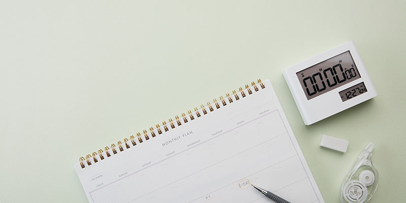
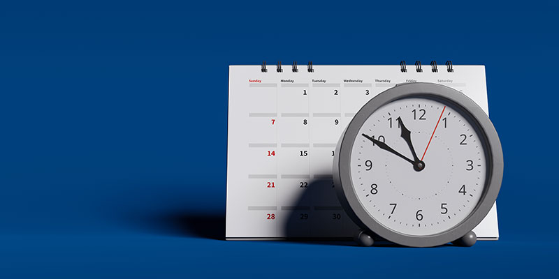

우리는 흔히 집중력을 의지의 문제로 생각하지만, 뇌는 일정한 주기로 집중과 회복을 반복하도록 설계되어 있다. 울트라디안 리듬은 24시간 이내에 반복하는 생체 리듬으로, 약 90분 주기로 집중력이 최고조에 이르렀다가 다시 떨어지는 패턴을 의미한다. 이는 수면 중 나타나는 얕은 잠과 깊은 잠의 사이클과 동일한 리듬으로 깨어 있는 낮에도 그대로 작동한다. 문제는 현대인의 일상이 이 리듬을 무시한 채 설계되어 있다는 점이다. 끊임없는 알림, 멀티태스킹, 장시간 집중 요구는 뇌의 자연스러운 흐름을 방해하고, 결국 피로, 집중력 저하, 감정 기복으로 이어진다. 하지만 울트라디안 리듬을 이해하고 이에 맞춰 하루를 구성하면 지속 가능한 집중력을 유지할 수 있다.
핵심은 ‘90분 집중+15~20분 회복’의 사이클에 익숙해지는 것이다. 90분 동안 한 가지 일에 몰입한 뒤, 반드시 뇌가 회복할 수 있는 시간을 제공해야 한다. 이때 중요한 점은 회복 시간에 스마트폰 확인, 뉴스 보기 같은 뇌에 새로운 정보를 입력하는 활동을 하지 않는 것이다. 대신 산책, 스트레칭, 눈 감고 심호흡하기처럼 뇌에 자극을 주지 않는 활동이 진정한 회복을 키운다. 오늘부터 뇌의 언어를 이해하고, 리듬을 맞춰가는 하루를 시작해 보자.
[울트라디안 리듬]

90분 집중 세션 설계하기
한 가지 업무나 공부에만 집중하고, 스마트폰 알림과 멀티태스킹은 차단한다. 중간에 다른 일에 빠지지 않도록 주변을 설계하자.
15분~20분 뇌 회복 시간 갖기
산책, 스트레칭, 눈 감고 심호흡하기처럼 정보를 들이지 않는 활동으로 뇌를 회복시키자. 이 시간은 쉬는 시간이 아니라 다음 집중을 위한 재충전 시간이다.

하루 3~4회 집중 사이클 반복하기
오전과 오후 각각 1~2회씩 집중 세션을 배치하고, 각 세션 사이에는 반드시 회복 시간을 넣자. 늦은 오후에는 가벼운 창의 활동이나 정리 업무를 배치해 뇌를 효율적으로 사용할 수 있다.